In this section, the type inheritance concepts in GME are introduced.
Type inheritance is a feature supported by all domain-specific languages in GME. We illustrate these concepts using a circuit-modeling environment.
Let’s see the metamodel of digital circuits! All digital circuits can be built using AND and NOT gates exclusively, so we shall define a modeling environment with only these two types of gates.
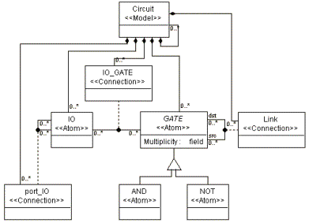
Figure 1: Metamodel of a Circuit paradigm
In our metamodel, there will be a model class called Circuit containing gates and/or other circuits. The NOT gates are inherited from the GATE class (see Tutorial 2 for reference on inheritance operation), as they act almost the same, inasmuch as they have the same attributes, connections, etc., although the logic they implement differs. Make the Abstract attribute of the GATE class “true” to specify it to be an abstract base class, i.e. there won’t be any pure GATE objects in the target paradigm.
Circuits have input and output ports (IO). To make IO ports appear as GME ports in Circuit models left click on the containment connection between the GATE atom and the Circuit model and set the “Object is a port?” attribute to “true”.
Gates can be connected together by wires (LINK). Since AND gates and NOT gates are derived from the GATE common base class, it is enough to add only the GATE class to the Circuit model explicitly using a Composition connection.
The IO ports can be connected together by port connections (port_IO). Actually, we need this connection only when we connect an input or output port directly to a Circuit port. The class diagram of this metamodel is shown in Figure 1 above.
We need only one aspect. Again, you do not need to add AND and NOT gates to the aspect. They can be added implicitly through the GATE object.
You can define your own icon files for models, too, by setting the Icon name and Port icon name attributes of the classes in the Attributes window. It makes sense to define your own icon path by invoking File/Settings…in the target environment and giving only the file name and its extension in the Attributes window in the metamodels.
We need an attribute to specify the number of input connections of logic gates. So add a Multiplicity attribute to your GATE object in Attributes aspect. Make it a field attribute of integer type and specify 2 as its default value. Notice, that both the AND and the NOT gates inherit this attribute.
At model creation time we should check whether the user is about to create a connection violating one of our restrictions. We can do this with the help of the constraint manager.
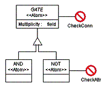
Figure 2: Assigning constraint objects to gates
Our basic concept was to create the paradigm of AND gates with two, and NOT gates with one input. We do not want to let the user to create more connections than the gates can accept. Therefore when the user violates one of our constraints, we would like to send her an error message, and abort the current transaction. Accordingly we define two constraints. One constraint limits the number of connections to the maximum number of ports. The other makes sure the user modifies the Multiplicity attribute of NOT gates to 1.
Switch to the Constraint aspect and drag two constraint objects ( ) onto your sheet. We would like to check the number of input connections of the gates each time the user creates a new connection. To achieve that, connect one constraint object to the GATE object and name it CheckConn.
Another constraint will check whether the user corrects the multiplicity attribute of NOT gates. Connect a new constraint object to the NOT gate and name it CheckAttr. The result should look like in Figure 2 above.
The attributes of our constraint objects can be set up in the Attribute window of them (see Figure 3). In this window you can specify an error message by typing it in the Description textbox.
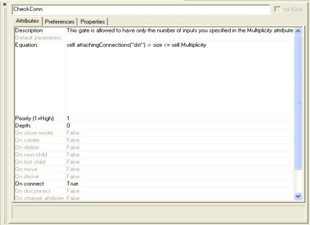
Figure 3: Attribute settings for CheckConn constraint
We would like to be notified about a validation error of CheckConn constraint just when we try to create the connection in the target environment, so in the Attributes window of the constraint set the “On Connect” attribute to “true” Here you can select which event or events should activate the constraint violation checking. In case of the CheckAttr constraint, the checking should be done when changing the Multiplicity attribute, so set the “On change” attribute to “true”.
Set the Priority attribute of the CheckConn constraint to 1, which will prevent the current transaction from being committed. You can set the priority in a 1-10 range, where the highest priority is 1. If you set a lower than 1 priority, the user can decide, whether she still wants to commit her transaction. For the CheckAttr constraint set the priority to 2.
The Depth attribute says how deep in the hierarchy should the constraint be evaluated (0 – only when the object associated with the constraint gets the specified event, 1 – it is valid for the children of our object, too, any – all the way down the hierarchy). Set the Depth attribute of the constraints to 0.
We can define the actual constraint expression in the Constraint equation textbox. Here you can add an OCL (Object Constraint Language) expression. You can see the detailed syntax in the GME User’s Manual.
Our simple equation for CheckConn constraint is as follows:
self.attachingConnections("dst")->size <= self.Multiplicity
self refers to the object associated with our constraint object. We execute the attachingConnections() operation on this referred object to retrieve its connections created to or from this object. The “dst” is the parameter selects only the collection of the incoming connections. The size tells us the number of elements in this collection. We can query the value of the Multiplicity attribute of the object associated with our constraint object. This will serve as the upper bound for our connections. Enter the constraint in the Constraint equation textbox of the CheckConn constraint. (See Figure 3.)
The CheckAttr constraint determines the value of Multiplicity in case of a NOT gate. The equation for this constraint is:
self.Multiplicity = 1
Type this equation in the textbox. Whenever a syntax error is found in the constraint expression leaving the Constraint equation box, the syntax checker notifies the user about it.
Interpret the Circuit metamodel (t3Circuit.xme) and register the paradigm.
Let’s design an OR gate using this paradigm! The logical OR operation results false if and only if both (all) of its input signals are false. It is equivalent to the inverse of a logical AND operation with the inverse input signals. Insert a new paradigm sheet into your root folder and name it OR. The model of this circuitry is shown in Figure 4.
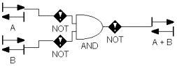
Figure 4: Designing an OR gate using the Circuit paradigm
Notice that the AND gate has 2 inputs in the figure. If you try to create another link to the AND gate, you will get the following error message (See Figure 5):
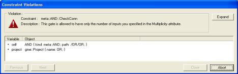
Figure 5: Error message because of constraint violation
Your only choice is the Abort option. If you set a lower priority for the constraint in the metamodel (like you did it for the CheckAttr constraint), you can choose the other option (Close) and commit the transaction anyway.
If you try to change the Multiplicity attribute of the NOT gate, and the value you set, differs from 1, you get the error message you specified for the CheckAttr constraint.
If you change the multiplicity attribute of the AND gate to 4, or that of the NOT gate to 1, you will not get any of these messages.
In the Attributes window you see every attribute in either black or gray color. If you modify the value of an attribute, the color is changed to black. The color tells you whether the attribute value is inherited – gray (in this case from the metamodel) or is redefined in this object - black. E.g. if you use type inheritance (see next section), the derived model inherits its attributes from its base model type as long as you do not change it in the derived model. Pressing the CTRL-D on the attribute sets back the value specified in the base type. The same rules apply to the Preferences window.
After creating the model of the OR gate, you will see a model entry in the browser window that has a capital T before its name. This shows you that you have a new model type in your project.
In GME a subtype of a model type can be created by dragging and dropping the type in the browser or an editing window while pressing the ALT+SHIFT key combination. An instance is created in a similar manner, but only the ALT key needs to be held down.
In our example, let’s assume, that we need an XOR gate, too. The result of an XOR gate is true, if and only if exactly one of the (two) input signals is true. Having two input signals we have two cases: whether A is true AND B is NOT true OR A is NOT true AND B is true. In addition to the built-in concepts (AND, NOT) we will need to use an instance of the OR model type. Insert a new circuit sheet into your root folder and name it XOR. Drag the OR model type while holding the ALT key and drop it above the name of the XOR paradigm sheet in your Browser window. Now you can specify the rest of your own XOR gate model type as shown in Figure 6.
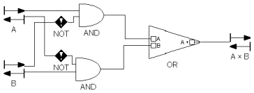
Figure 6: Designing XOR with type inheritance
We know now how to modify the icon attribute of an object, so you can change the inherited circuit.bmp entry in the OR base model type to or.bmp. It makes sense to make this modification in the OR base model type so that it will propagate down to all of its subtypes and instances.
Now, we have seen a good application of model instances. Now let’s see how subtyping can be used!
After modifying the multiplicity attribute of the AND gate we are able to create an OR gate model type accepting 4 input signals, too. The functionality of this gate, however, is the same as by two input signals: the result should be false, if and only if all of the input signals are false. This time you need a subtype of OR model type, so drag it an drop it in your root folder in the Browser window while pressing the ALT+SHIFT key combination.
In the Browser window you will not see big difference between the two OR models, but when you open any of them, should it be the subtype of your model, you will see the 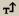 button in your Toolbar enabled. Should it be an instance, the 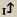 button would be enabled. Pressing these buttons brings you up one level in your inheritance hierarchy. You can see the type inheritance hierarchy if you switch from the default Aggregation TAB to the Inheritance TAB in the Browser window while one of the involved models is selected (See Figure 7).
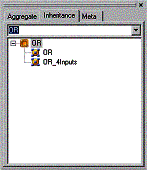
Figure 7: Inheritance TAB in the Browser window
Open your new subtype and design it by adding two more input signals just like you did when you needed the first two of them. To make it more informative, rename your model subtype OR_4Inputs by right clicking anywhere in your sheet in the user area or on its name in the Browser window and invoking Properties in the popup menu. Your subtype should be similar to that in Figure 8.
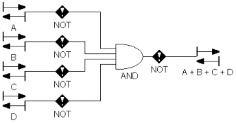
Figure 8: OR gate with 4 input signals
Let’s make some experiments with our model! Open the OR base type to change the name of A input signal to Q. You can see the propagation process of this modification down to OR_4Inputs subtype and OR instance: the A input signal will be automatically renamed to Q.
Open the OR_4Inputs subtype and change this name attribute of Q input signal to In1 breaking the dependency chain: whenever a modification is made to the name of the Q input signal in the OR base type, it will not be propagated down to the In1 input signal in OR_4Inputs (and its existing descendants or descendants to come), which would be the case, when one modifies In1 in OR_4Inputs, however. That is what you see, when you try to rename Q in the base type to A again. In the OR instance the modification is made, but not in the OR_4nputs subtype.
In this situation any other modifications (other property changes, new part additions, etc.), however, are propagated down to the OR_4Inputs subtype and the OR instance as well.. You can see the dependency chain of our models in Figure 9.
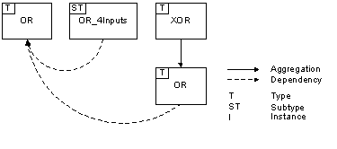
Figure 9: Dependency chain
So, we have created an OR
base type and an instance of this base type, which we built in the new XOR base type. Next we derived a subtype
named OR_4Inputs from the OR base type, in which we changed the number of the input
signals the original gate model accepted. The simple type inheritance hierarchy
of our models is depicted on 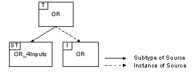 Figure 10:
Type inheritance hierarchy Now you are able to create a hierarchy of model types and
instances. Let’s see all the rules in a concise manner: ·
You can only create subtypes and instances of models. ·
Model subtypes and instances inherit all the
properties, attributes and preferences from the base type. ·
Aggregation and type inheritance introduce dependency
chains between models. A model subtype can be derived from a base type or another
subtype. Instances are the leaf nodes in this type inheritance chain: you
cannot create a subtype or an instance of an instance. ·
Whenever an attribute or preference change is made to
the base type, it is propagated down to its subtypes and instances and
instances of its subtypes. ·
Set membership modification and reference redirection
propagates down the dependency chain. ·
Part modification in a model type propagates down the
type inheritance unconditionally. ·
You can change attributes or preferences either in
subtypes or in instances. ·
Parts can be added only in subtypes! ·
Inherited parts cannot be deleted in subtypes or in
instances! ·
If a particular setting has been overridden in a
certain model in the dependency chain, this breaks the chain for that setting. ·
You can create a subtype or an instance at any level of
the model hierarchy. To avoid multiple dependency chains, however, once you
defined a type inheritance for a model type, its ascendants and descendants in
the containment hierarchy are excluded from further derivations.
Summary
<< Previous Lesson
Complete List
Next Lesson >>